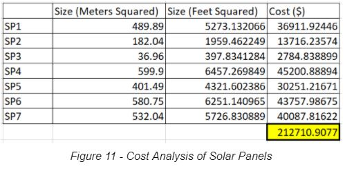

About EcoYork
The purpose of this project is to create a 3D model of a section of York University Keele Campus and retrofit the buildings to reduce the Annual Greenhouse Gas (AGG) which is currently on an uprise due to urban growth and building development. While creating the 3D model proposal, this project also aims to support 4 of the United Nations Sustainable Development Goals: #7: Affordable and Clean Energy, #9: Industry, Innovation and Infrastructure, #11: Sustainable Cities and Communities and #13: Climate Action.
Methodology
Our plan implements the use of LED light bulbs, wind turbines, and EV charging stations that use solar panels which we can use to line the roofs of buildings. The order of work we chose to follow starts with installing the LED lights, then the wind turbine, the solar panels and car charging stations, and lastly expanding the amount of solar panels depending on budget and municipal constraints. Workflow shown in Figure 1.
LED Light Bulbs
Firstly, a technician will check each light source in every building if they use LED light bulbs. The technician will provide a report with how many light sources don’t use LED as well as the bulb proportion to fill the source as some use bulbs or panels. Depending on the budget, we will purchase around 1.2 times the number of LED light bulbs for future use if any bulbs go out.
For an approximate budget estimate, it was determined that amongst the buildings in the south east corner of campus there would be two different bulbs used: the conventional bulb that is found in households as well as the rod like bulbs used commercially, these would be used in the residences and lecture halls respectively. An approximate number of 600 bulbs for each of the 3 residences was determined, as well as another 900 commercial rod lights for lecture halls. With prices of $5 and $30 for the small and large bulbs respectively, the estimated cost came to $10,800 and $32,400 , which were deducted to $8,000 and $25,000 assuming that there will be discounts due to the large purchase in bulk. Therefore, the estimated budget for the bulbs is roughly $33,000 assuming that every single bulb in each building needs to be changed.
Wind Turbine
The size of a wind turbine (funnel shaped) should have a height that resembles a building it is placed between. In terms of width and length, the proportions are lopsided like a rectangle’s dimensions. The location of the wind turbine needs to be away from a pedestrian populated area. A good place to place a wind turbine would be in between the Quad Buildings as there is a rectangular strip of space, shown in Figure 2. The wind turbine can be connected to a local powerline or grid that provides its energy from the funneled wind breezing between the Quad Buildings.
Solar Panels
There were three buildings that were selected for the installation of solar panels on campus with a total of 7 separate locations of installation. These buildings are the Victor Dahdaleh Building, Seneca College and Schulich School of Business, the locations for installation are shown in Figures 3 - 9 along with the overview in Figure 10. The specific locations of the installation sites were chosen when studying the sun rays on the provided webscene on ArcGIS.

To determine the approximate costs of the installations, data was gathered such as the area, as seen in Figures 1-7, measurements of the area were done with Google Earth Pro. An approximate cost of $4 - 10 per square footage was found, so the area was converted to feet and an average of $7 per square foot was used. [1] The results of the calculations are displayed in Figure 11.

As previously stated, more solar panels can be installed according to budget. Although, our team is not planning on installing any panels on the Quad Residence due to Toronto’s Municipal Code of Green Roofs. Which states that there must be a certain amount of space for amenities for residents on the rooftops, and since our team does not have access to Quad regulations we chose to avoid placing solar panels on the residence. The code also states that the installed solar panels will need to follow specific thermal emittance and solar reflectance values, these would be further investigated when installing the extra panels.
Electrical Vehicle (EV) Charging Stations
There are already some EV charging stations on York Campus, but we plan on expanding the stations to cover up to 10% of parking lot spaces, as globally only 2.25% of drivers go electric but we are expecting an increase in this statistic with the rapid growth of the electrical car industries [3]. Therefore, since the majority of cars are not electrically powered, we are going to focus more on lining solar panels on top of building roofs. Using data from atmospheric science researchers at York University, we can be provided with remote sensing data of building roofs that absorb the most solar radiation. Choosing the best locations, we can place solar panels where they will be used effectively. As time goes on and if budget allows, we can place more solar panels across all buildings and then eventually covering the parking lot with more EV charging stations as EVs become more popular.
Project Takeaways
In this project we applied project planning concepts that we learned in some of the core ENG courses, this further gave us greater understanding in the concepts used. A valuable lesson learned is usage of spatial data to implement solutions to a proposed problem. ArcGIS and Google Earth Pro were relied on to make these spatial interpretations, therefore giving us better knowledge in the software. Research and Data acquisition was a major role in this project as well, enhancing our abilities to find the needed data and information when given a problem, which will be a great skill to have in our arsenal. Lastly, another key takeaway is getting more experience in connecting ideas to support United Nations SDGs and understanding which furthers our understanding of the application of Geomatics Engineering.